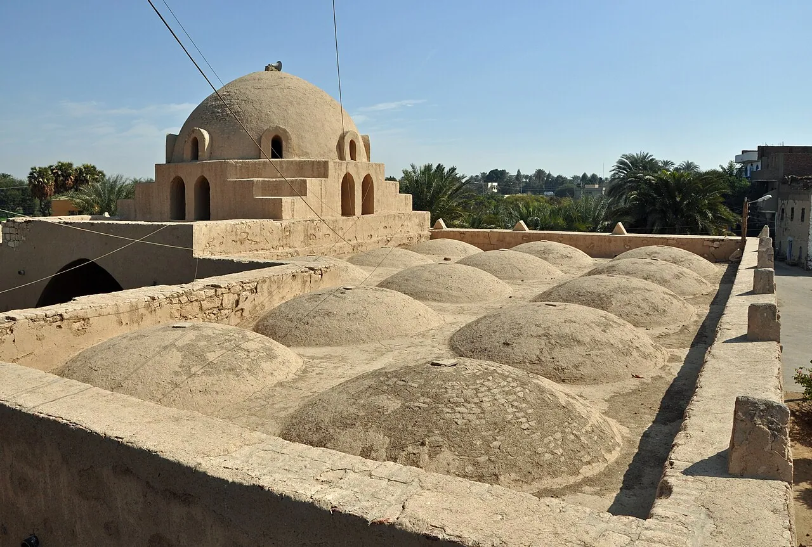
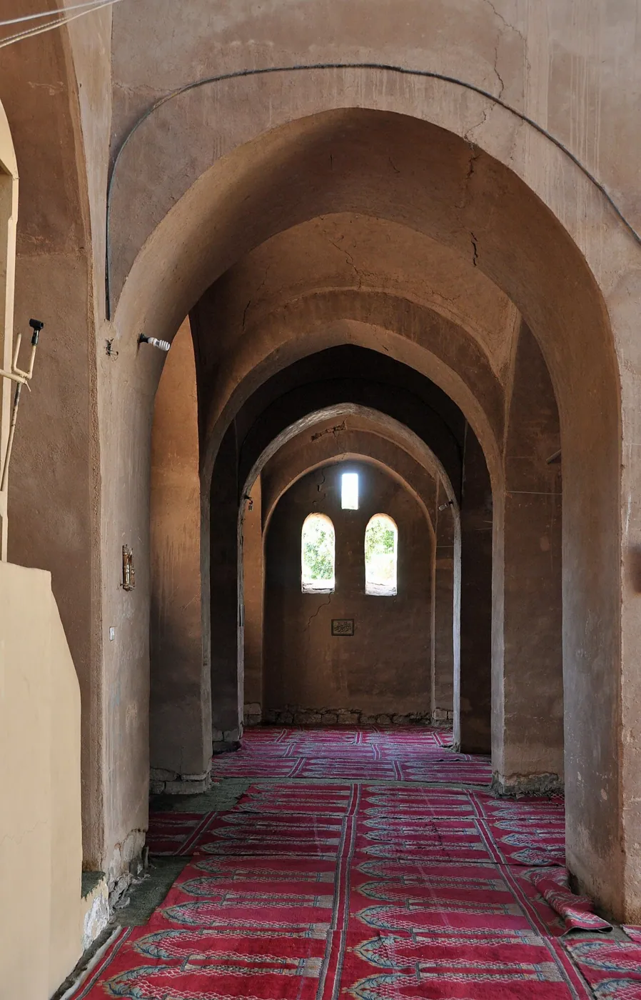
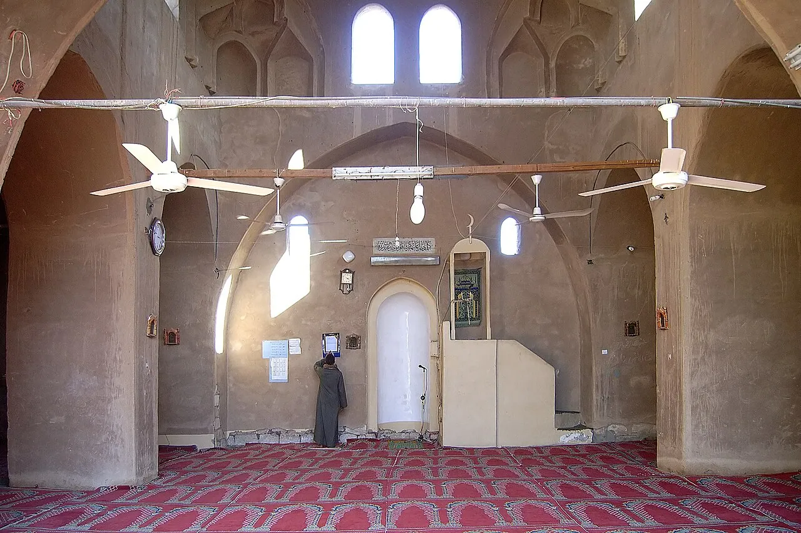
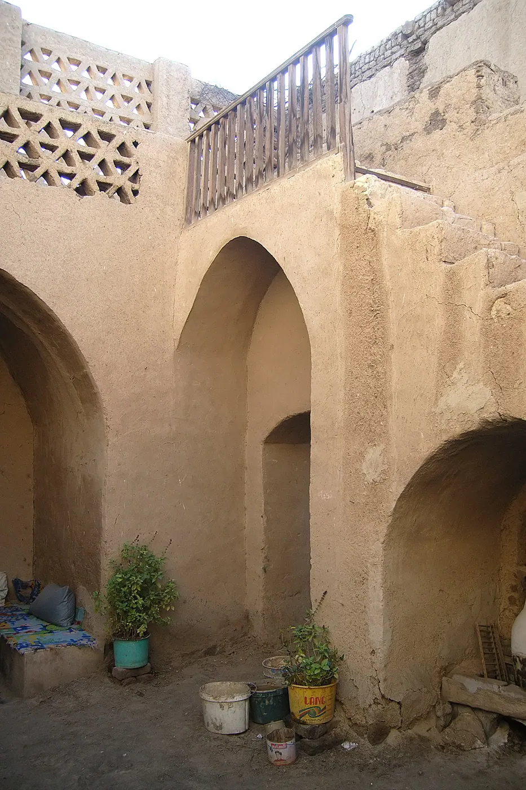
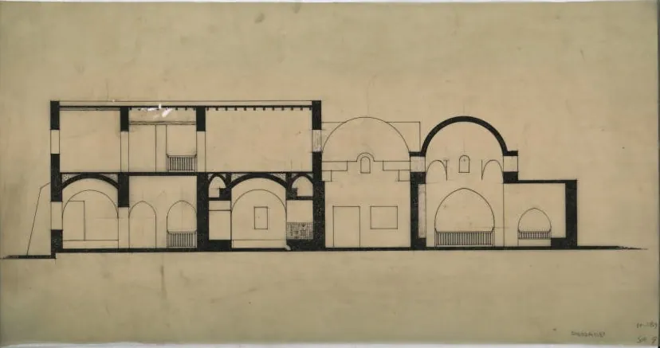

1/9 · Exterior · Gurna (Luxor, Egypt): the mosque (architect: Hassan Fathy)Photo: Marc Ryckaert · CC BY 3.0 · source

2/9 · Exterior · Gurna (Luxor, Egypt): the mosque (architect: Hassan Fathy)Photo: Marc Ryckaert · CC BY 3.0 · source3/9 · Exterior · Luxor (Egypt): New GournaPhoto: Marc Ryckaert · CC BY 3.0 · source4/9 · Exterior · Dwelling houses in new GurnaPhoto: Roland Unger · CC BY-SA 3.0 · source

5/9 · Interior · Gourna (Luxor, Egypt): interior of Hassan Fathy's mosquePhoto: Marc Ryckaert · CC BY 3.0 · source

6/9 · Interior · Mihran and minbar of the mosque in New GurnaPhoto: Roland Unger · CC BY-SA 3.0 · source7/9 · Detail · Arcades at the market in New GurnaPhoto: Roland Unger · CC BY-SA 3.0 · source

8/9 · Detail · Court of a house in new GurnaPhoto: Roland Unger · CC BY-SA 3.0 · source

9/9 · Section · Section showing the craft exhibition hall of New Gourna VillagePhoto: RBSCL · CC BY-SA 4.0 · source